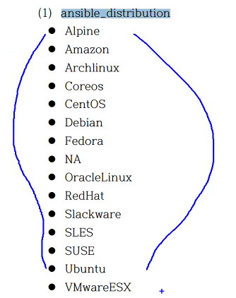
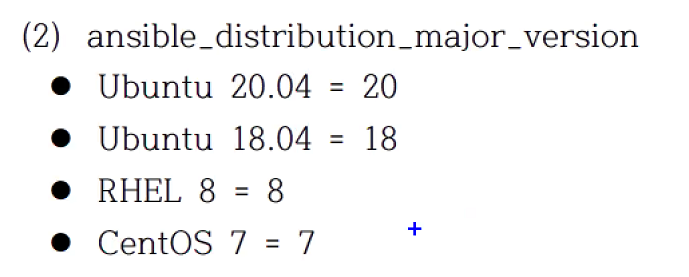
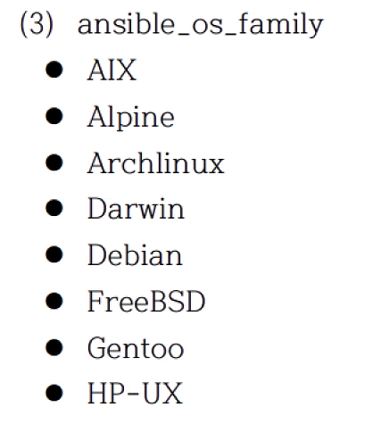

작업 제어 - 기본
6.1 반복문
ansible 2.4 까지는 with_* 사용하였었는데
ansible 2.5 부터 loop를 추가함
loop 키워드를 사용하면 기존의 with_* 키워드로 했던게 일부 안되는 경우가 있음.
변수의 값을 받는 변수명은 항상 item 이다!
반복문에서 제공되는 목록을 참조하는 변수는 항상 item 이다
- hosts: 192.168.200.101
tasks:
- debug:
msg: "{{ item }}"
loop:
- one
- two
- three
$ ansible-playbook loop.yaml
PLAY [192.168.200.101] *********************************************************************************
TASK [Gathering Facts] *********************************************************************************
ok: [192.168.200.101]
TASK [debug] *******************************************************************************************
ok: [192.168.200.101] => (item=one) => {
"msg": "one"
}
ok: [192.168.200.101] => (item=two) => {
"msg": "two"
}
ok: [192.168.200.101] => (item=three) => {
"msg": "three"
}
PLAY RECAP *********************************************************************************************
192.168.200.101 : ok=2 changed=0 unreachable=0 failed=0 skipped=0 rescued=0 ignored=0
- hosts: 192.168.200.101
vars:
loop_list:
- one
- two
- three
tasks:
- debug:
msg: "{{ item }}"
loop:
"{{ loop_list }}"
1) 단순반복
패키지를 설치하는 곳에 반복문을 실행하면 오히려 오래걸림, 걍 컴마로 나열하셈!
명령이 한번만 실행됨: apt install apache2,php 명령이 2번 실행됨: apt install apache2; apt install php # 반복문 사용하면 요로케.. 성능에 마이너스~
모듈에 따라서 리스트로 받을수 있는 모듈이 있고 안되는 모듈이 있음
2) 사전 목록 반복
- name: add several users
user:
name: "{{ item.name }}"
state: present
groups: "{{ item.groups }}"
loop:
- { name: 'testuser1', groups: 'wheel' }
- { name: 'testuser2', groups: 'root' }
item.
3) 중첩 목록 반복
데카르트의 곱... product
총 6번이 실행됨
alice 의 clientdb8
alice 의 employeedb
alice 의 providerdb
bob 의 clientdb
bob 의 employeedb
bob 의 providerdb
4) 인벤토리 반복
- debug:
{% raw %}msg: "{{ }}"{% endraw %}
인벤토리 호스트 쿼리하여 사용 가능
6.2 조건문
변수의 값이 test_name 이면 실행을 하거라
- debug:
msg: hello world
when: variable is test_name
1) 테스트
참인지 거짓인지 평가
Ansible 플레이북 실행 후 마지막에 recap 부분에 skip 이뜨면 넘어간 task임
(2) 버전 비교 테스트
when: ansible_facts['distribution_version'] is version('12.04', '>=')
(3) 경로 테스트
- dir: is directory
- file: is file
- symlink: is link
- exist: is exist
- same compare: is samefile(path)
- mount: is mount
(4) 이전 작업의 결과 테스트
ignore_errors: True
이전 작업이 실패하든 말든~ 다음으로 넘어간다
result is successed 변경 사항 없지만 성공
- failed: result is failed
- changes: is changes
- succeeded: result is succeeded
- skipped: result is skipped
2) 조건문
너무나도 많이 사용한다.
(1) 기본 조건문
(2) 팩트 변수 기반의 조건문
멀티 os 기반의 모듈을 실행해야할 때 정말 많이 사용하는 조건문
when: ansible_facts['os_family'] == "Debian"
distribution 도 체크
OS가 어떤 계열 인지 확인 (Debian/Redhat)
ansible_facts['os_family'] == 'Debian'OS 배포판 확인
ansible_facts['distribution'] == 'CentOS'OS 배포판 버젼 확인
ansible_facts['distribution_major_version'] == '7'
여러 조건 목록으로 표현하면 and 연산이 적용 or 연산은 없음
(3) 등록 변수 기반의 조건문
3) 조건문에 자주 사용되는 팩트와 변수값



- 실습 ```yaml
name: Simple Web Deploy hosts: 192.168.200.101 vars: contents_file: index.php apache_port: "8080"
tasks:
name: Install Pacakge for Ubuntu apt: name: apache2, libapache2-mod-php update_cache: true state: present when: ansible_distribution == "Ubuntu"
name: Install Package for CentOS yum: name: httpd, mod-php state: present when: ansible_distribution == "CentOS"
name: Copy PHP Contents copy: src: '' dest: '/var/www/html/' backup: true
name: Configure Apache Port template: src: ports.conf.j2 dest: '/etc/apache2/ports.conf'
name: Start Service service: name: apache2 state: restarted enabled: true
name: Checking uri: url: "http://192.168.200.101:/" ```
6.3 핸들러
작업을 실행하고 시스템에 반드시 변경(Change)이 있을 때 별도의 작업을 호출하고 실행
1) 핸들러 예
---
- name: Verify apache installation
hosts: webservers
vars:
http_port: 80
max_clients: 200
remote_user: root
tasks:
- name: Ensure apache is at the latest version
yum:
name: httpd
state: latest
- name: Write the apache config file
template:
src: /src/httpd.j2
....
apache 포트를 변경하고 그때에만 restart 하고 싶다?! 그럴때 사용
---
- hosts:
tasks:
- template:
src: a.j2
dest: /etc/a.conf
notify:
- restart service
handlers:
- name: restart service
service:
name: apache
state: restarted
~
- 실습 ```yaml
name: Simple Web Deploy hosts: 192.168.200.101 vars: contents_file: index.php apache_port: "8080"
tasks:
name: Install Pacakge for Ubuntu apt: name: apache2, libapache2-mod-php update_cache: true state: present when: ansible_distribution == "Ubuntu"
name: Install Package for CentOS yum: name: httpd, mod-php state: present when: ansible_distribution == "CentOS"
name: Copy PHP Contents copy: src: '' dest: '/var/www/html/' backup: true
name: Configure Apache Port template: src: ports.conf.j2 dest: '/etc/apache2/ports.conf' notify:
- Restart Service
name: Start Service service: name: apache2 state: started enabled: true
name: Checking uri: url: "http://192.168.200.101:/" ignore_errors: true
handlers:
- name: Restart Service service: name: apache2 state: restarted ``` ignore_errors: 이거 말고 다른 우회 방법을 나중에 해준다.
template 모듈이 change 상태일 때 notify 되면서 handler가 동작함
Ansible에서 핸들러는 대부분 서비스를 재시작하는거 말고는 없다.
다른 용도로도 쓸 수 있다고 한다.
task가 모두 끝나야만 핸들러가 동작한다! 이걸 꼭 기억하자!
(2) 다중 알림 (수신)
알림을 보낼 notify가 여러개일 때는 listen 키워드를 사용해도 좋다.
이름을 따로 주고 싶기 때문.
작업 알림에 변수를 사용할 수 있지만 원칙적으로 사용하지 않는 것이 좋다.
왜냐면 알림이 안 갈 우려가 있다.
2) 작업과 핸들러의 실행 순서
- 핸들러는 플레이의 모든 작업이 완료된 후 핸들러 작업을 실행한다.
- 핸들럭 작업의 순서는 알림을 받은 순서가 아니라 순차적으로 실행된다.
- 알림을 받은 핸들러만 실행된다.
- 알림을 2번 이상 받더라도 한번만 실행된다.
- 정적, 동적 핸들러 관련은 이후에... (to be continue...)
6.4 위임
저기 위에 예시를 보면 uri 모듈에서 자기가 자신한테 체크를 하고 있다.
그런데 방화벽 설정 고런거 있으면 저렇게 체크하는게 의미가 있나?
단순하게 새로운 플레이를 만들어서 할 수도 있지만
delegate_to 속성을 이용하면 다른 시스템에다가 진행을 시킬 수 있다아.
그리고 다른 예시로는 로드밸런싱 되고 있던 서버의 포트를 바꾸는 작업을 작성했다 치자
그러면 포트의 설정을 바꾸는 작업을 하고 로드 밸런서 한테 설정 적용을 위임하는 식으로 사용한다.
다른 노드 또는 로드밸런서에서 명령을
대신 샐행하도록 함.
1) 위임 할 수 없는 모듈
- include
- add_host
- debug
2) 작업의 위임
3) 팩트 수집 위임
...
setup:
delegate_to: "{{ item }}"
delegate_facts: true
...
setup 모듈을 사용해서 다른 시스템의 facts 변수들을 가져 올 수 있다.
단 이렇게 할 경우 delegate_facts: true 를 반드시 지정해 주어야 한다.
6.5 블록
작업을 하나의 논리적인 작업으로 묶는 기능을 함
task 들을 하나의 블록으로 묶어서 조건문을 걸고
특정 OS, 특정 배포판 버젼에서만 실행되는 식으로 할 수 있다!
tasks:
- name: Multiple tasks..
block:
- name: Install Apache2
apt:
name: apache2
- name: ~~~
apt:
name: ~~~
when: ansible_facts['distribution'] == 'Ubuntu'
become: true
ignore_errors: yes
block, rescue, always 섹션이 존재
rescue 블록의 작업중 하나라도 실패가 있으면
rescue 섹션으로 실행됨.
모두 성공하면 실행 안함.always 성공하던 실패하던 항상 실행
rescue + always 실패 있으면 rescue 실행
항상 실행 할 것은 always 에 써
5) 실패처리 - 핸들러
handler가 달린 테스크가 성공전에 실패한다묜?
그럼 핸들러가 실행되지 않아요!
그래서 rescue에 meta에 flush_handlers
이거 쓰면은 어떻게든 핸들러가 실행됨
이 형태는 자주사용되는 형태이다! 알아두면 써먹기 좋다.
meta 모듈
meta action : Ansible 의 동작을 로우 레벨에서 제어
meta: flush_handlers 를 하면 핸들러가 무조건 실행된다.
많이 사용하니 꼭 알아 두라고 하신다.
명령어 여러개 있긴한데 쎔은
flush_handlers 만 주로 써봤다하심!
- rescue 실행됨 task3에서 실패 ```yaml
- hosts: 192.168.200.101
tasks:
- block:
- name: TASK1 debug:
- name: TASK2 debug:
- name: TASK3
command: xxx
rescue:
- name: RESCUE1 debug:
- name: RESCUE2 debug: always:
- name: ALWAYS1
debug:
- block:
TASK [Gathering Facts] * ok: [192.168.200.101]
TASK [TASK1] * ok: [192.168.200.101] => { "msg": "Hello world!" }
TASK [TASK2] * ok: [192.168.200.101] => { "msg": "Hello world!" }
TASK [TASK3] * fatal: [192.168.200.101]: FAILED! => {"changed": false, "cmd": "xxx", "msg": "[Errno 2] No such file or directory: b'xxx'", "rc": 2, "stderr": "", "stderr_lines": [], "stdout": "", "stdout_lines": []}
TASK [RESCUE1] * ok: [192.168.200.101] => { "msg": "Hello world!" }
TASK [RESCUE2] * ok: [192.168.200.101] => { "msg": "Hello world!" }
TASK [ALWAYS1] * ok: [192.168.200.101] => { "msg": "Hello world!" }
PLAY RECAP * 192.168.200.101 : ok=6 changed=0 unreachable=0 failed=0 skipped=0 rescued=1 ignored=0
* rescue 실행 안됨 task 모두 성공
```yaml
- hosts: 192.168.200.101
tasks:
- block:
- name: TASK1
debug:
- name: TASK2
debug:
- name: TASK3
debug:
rescue:
- name: RESCUE1
debug:
- name: RESCUE2
debug:
always:
- name: ALWAYS1
debug:
PLAY [192.168.200.101] ***************************************************************************************************
TASK [Gathering Facts] ***************************************************************************************************
ok: [192.168.200.101]
TASK [TASK1] *************************************************************************************************************
ok: [192.168.200.101] => {
"msg": "Hello world!"
}
TASK [TASK2] *************************************************************************************************************
ok: [192.168.200.101] => {
"msg": "Hello world!"
}
TASK [TASK3] *************************************************************************************************************
ok: [192.168.200.101] => {
"msg": "Hello world!"
}
TASK [ALWAYS1] ***********************************************************************************************************
ok: [192.168.200.101] => {
"msg": "Hello world!"
}
PLAY RECAP ***************************************************************************************************************
192.168.200.101 : ok=5 changed=0 unreachable=0 failed=0 skipped=0 rescued=0 ignored=0